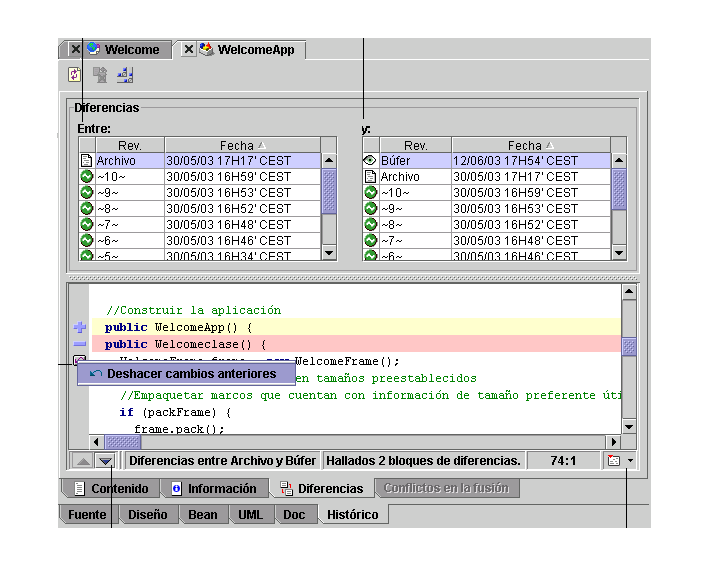

Las funciones de desarrollo en equipo (control de versiones) varían según la versión de JBuilder.
JBuilder proporciona funciones que aceleran y facilitan el desarrollo en equipo. También permiten gestionar versiones en todas las ediciones. Para ver la información de la versión de un archivo, pulse la pestaña Histórico en la parte inferior del panel de contenido. Las pestañas proporcionan diferentes vistas de la información de revisión según la edición de JBuilder.

JBuilder se integra con varios sistemas de control de versiones conocidos, entre los que se cuentan Borland StarTeam, CVS (Concurrent Versions System, sistema de versiones concurrentes), Visual SourceSafe y Rational ClearCase.
Si desea más información, consulte:
Generación de aplicaciones con JBuilder Comparación de archivos y versiones
Desarrollo de aplicaciones en equipo con JBuilder Introducción